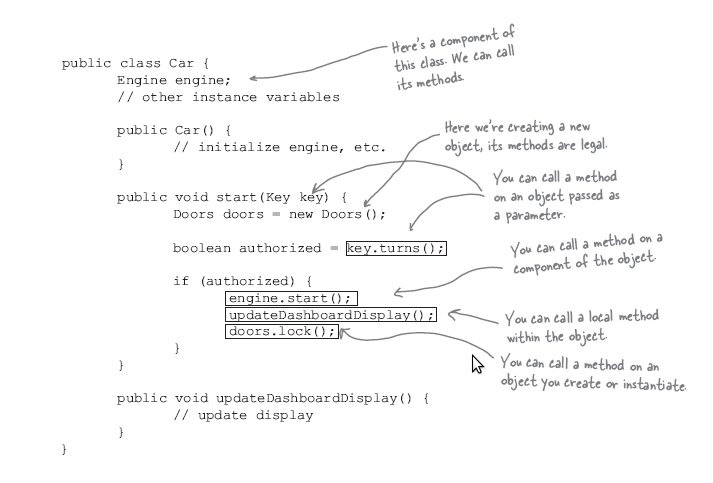

facade模式¶
facade模式定义¶
The Facade Pattern provides a unified interface to a set of interfaces in a subsystem. Facade defines a higher-level interface that makes the subsystem easier to use.
Facade模式 为一个子系统的一系列接口提供一个统一的接口. Facade定义了使得子系统更容易使用的高级接口.
问题描述¶
家庭影院系统包括:功放,投影仪,DVD播放器等, 那么每次欣赏电影时,可以使用各自类的方法来完成,如,先打开投影仪,然后DVD播放器,然后 投影仪,然后功放等,欣赏完成后以相反的顺序关闭.但是这样显然比较麻烦,此时可使用 Facade模式 提供简单的接口,即播放电影和关闭电影.
Facade模式的类图:

具体代码¶
下载请点击 这里
1 2 3 4 5 6 7 8 9 10 11 12 13 14 15 16 17 18 19 20 21 22 23 24 25 26 27 28 29 30 31 32 33 34 35 36 37 38 39 40 41 42 43 44 45 46 47 48 49 50 51 52 53 54 55 56 57 58 59 60 61 62 63 64 65 66 67 68 69 70 71 72 73 74 75 76 | #include<iostream>
#include<string>
using namespace std;
class Device
{
public:
string name;
virtual void on(){cout<<name<<" is on."<<endl;}
virtual void play(){cout<<name<<" is playing."<<endl;}
virtual void off(){cout<<name<<" is off."<<endl;}
};
class DVD:public Device
{
public:
DVD(){name="DVD";}
};
class Amplifier:public Device
{
public:
Amplifier(){name="Amplifier";}
};
class Projector:public Device
{
public:
Projector(){name="Projector";}
};
class FacadeThreater
{
private:
DVD* dvd;
Amplifier* amplifier;
Projector* projector;
public:
FacadeThreater(DVD *dvd, Amplifier *amplifier, Projector *projector)
{
this->dvd = dvd;
this->amplifier = amplifier;
this->projector = projector;
}
void playMovie()
{
dvd->on();
projector->on();
amplifier->on();
dvd->play();
}
void stopMovie()
{
amplifier->off();
projector->off();
dvd->off();
}
};
int main()
{
DVD dvd;
Amplifier amplifier;
Projector projector;
// non-facade method
// play movie
cout<<"################# Non-facade Pattern ####################"<<endl;
dvd.on();
projector.on();
amplifier.on();
dvd.play();
// using facade pattern
cout<<"################# Facade Pattern ####################"<<endl;
FacadeThreater ft(&dvd, &lifier, &projector);
ft.playMovie();
return 0;
}
|
输出结果为:
################# Non-facade Pattern ####################
DVD is on.
Projector is on.
Amplifier is on.
DVD is playing.
################# Facade Pattern ####################
DVD is on.
Projector is on.
Amplifier is on.
DVD is playing.
面对新的需要¶
只需要进行相关的封装即可.
更多注意¶
Decorator模式, Adapter模式, Facade模式的区别参见 adapter模式定义
设计准则:
Principle of Least Knowledge-talk only to your immediate friends.
此准则也称为 Law of Demeter, 迪米特准则
注解
米特法则有一些很形象的比喻： 如果你想让你的狗狗跑的话，你会对狗狗说还是对四条狗腿说？ 如果你去店里买东西，你会把钱交给店员，还是会把钱包交给店员让他自己拿？
这个准则告诉我们, 我们只能调用下列情形下的方法:
- 对象自身
- 作为参数对象传递传递给方法
- 方法创建或者实例化的任何对象
- 任何对象的部件
一个遵循此准则的例子:
